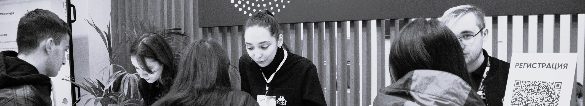

Список документов:
Список дополнительных документов:
Сроки подачи документов:
Прием документов начинается 20 июня 2024 года. Сроки окончания приема зависят от выбираемой формы обучения (очная, очно-заочная, заочная), необходимости сдавать внутренние вступительные испытания и выбора основы обучения (бюджетной или платной).
Смореть сроки
Способы подачи документов:
доступен во время приёма
Посредством федеральной государственной информационной системы «Единый портал государственных услуг и функций».
Через операторов почтовой связи почтовым отправлением с уведомлением и описью вложения по адресу: 107023, Москва, Б. Семеновская ул., 38, приемная комиссия.
Дополнительные вступительные испытания:
Дополнительные вступительные испытания сдают поступающие на творческие направления подготовки и специальности: Графику, Дизайн (транспортный, промышленный, графический дизайн мультимедиа), Журналистику, Технологии художественной обработки материалов, а также Архитектуру (филиал в г. Рязань).
Приём документов на них завершается раньше.
Смореть сроки